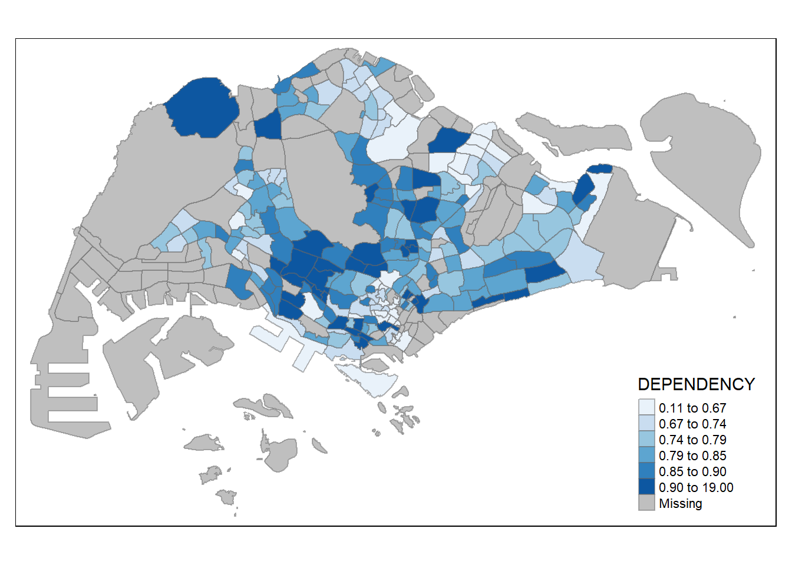
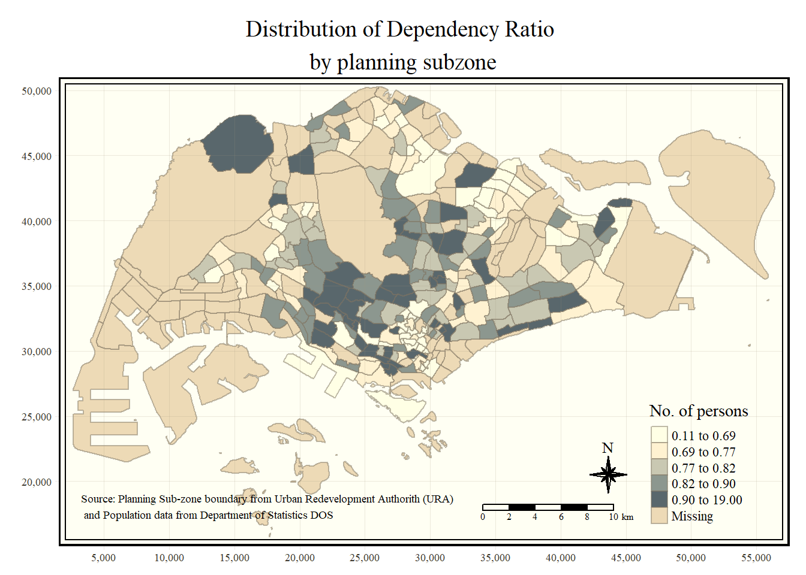

pacman::p_load(tidyverse, sf, tmap)Hands-on Exercise 7: Visualising and Analysing Geographic Data
1. Roadmap for studying
2. Visualzing: Choropleth Maps
2.1 Overview
What is Choropleth Maps?
- a type of map that uses colors to represent the magnitude of specific data values within certain areas, such as population density, income levels, or any other statistical data.
Why use Choropleth Maps?
Visual representation: shows the differences in data between geographical areas, allowing one to see at a glance where values are high or low.
Easy to understand.
Wide application: climate change, economic development, happy index, social issues, and other different fields.
How does it work?
- Each area is filled with a color corresponding to its data value. Higher data values are usually represented by darker colors, while lower data values are represented by lighter colors.
2.2 Getting Started
In this hands-on exercise, the key R package use is tmap package in R. Beside tmap package, four other R packages will be used. They are:
- readr for importing delimited text file,
- tidyr for tidying data,
- dplyr for wrangling data and
- sf for handling geospatial data.
To install and load these packages:
2.3 Importing Data
2.3.1 The Data
Two data set will be used to create the choropleth map. They are:
Master Plan 2014 Subzone Boundary (Web) (i.e.
MP14_SUBZONE_WEB_PL) in ESRI shapefile format. It can be downloaded at data.gov.sg This is a geospatial data. It consists of the geographical boundary of Singapore at the planning subzone level. The data is based on URA Master Plan 2014.Singapore Residents by Planning Area / Subzone, Age Group, Sex and Type of Dwelling, June 2011-2020 in csv format (i.e.
respopagesextod2011to2020.csv). This is an aspatial data fie. It can be downloaded at Department of Statistics, Singapore. Although it does not contain any coordinates values, but it’s PA and SZ fields can be used as unique identifiers to geocode toMP14_SUBZONE_WEB_PLshapefile.
2.3.2 Importing Geospatial Data into R
The code chunk below uses the st_read() function of sf package to import MP14_SUBZONE_WEB_PL shapefile into R as a simple feature data frame called mpsz.
Simple Feature Data Frame
a data structure used for storing and manipulating spatial data.
a standard for describing the geometries of spatial data, such as points (locations), lines (paths), polygons (areas), etc.
allows data scientists and geographic information specialists to process and analyze geospatial data in a consistent manner across various GIS software and programming environments.
Beyond the regular data columns (such as numeric, character, and logical values), a simple feature data frame includes at least one special column (known as the geometry column) that stores the spatial geometry data for each observation which enables the simple feature data frame to directly visualize and analyze spatial data within R, without the dependency on external GIS software.
mpsz <- st_read(dsn="data/geospatial",
layer = "MP14_SUBZONE_WEB_PL")Reading layer `MP14_SUBZONE_WEB_PL' from data source
`D:\yanrui-w\ISSS608-VAA\Hands-on_Ex\Hands-on_Ex07\data\geospatial'
using driver `ESRI Shapefile'
Simple feature collection with 323 features and 15 fields
Geometry type: MULTIPOLYGON
Dimension: XY
Bounding box: xmin: 2667.538 ymin: 15748.72 xmax: 56396.44 ymax: 50256.33
Projected CRS: SVY21You can examine the content of mpsz (first 10 records) by using the code chunk below.
mpszSimple feature collection with 323 features and 15 fields
Geometry type: MULTIPOLYGON
Dimension: XY
Bounding box: xmin: 2667.538 ymin: 15748.72 xmax: 56396.44 ymax: 50256.33
Projected CRS: SVY21
First 10 features:
OBJECTID SUBZONE_NO SUBZONE_N SUBZONE_C CA_IND PLN_AREA_N
1 1 1 MARINA SOUTH MSSZ01 Y MARINA SOUTH
2 2 1 PEARL'S HILL OTSZ01 Y OUTRAM
3 3 3 BOAT QUAY SRSZ03 Y SINGAPORE RIVER
4 4 8 HENDERSON HILL BMSZ08 N BUKIT MERAH
5 5 3 REDHILL BMSZ03 N BUKIT MERAH
6 6 7 ALEXANDRA HILL BMSZ07 N BUKIT MERAH
7 7 9 BUKIT HO SWEE BMSZ09 N BUKIT MERAH
8 8 2 CLARKE QUAY SRSZ02 Y SINGAPORE RIVER
9 9 13 PASIR PANJANG 1 QTSZ13 N QUEENSTOWN
10 10 7 QUEENSWAY QTSZ07 N QUEENSTOWN
PLN_AREA_C REGION_N REGION_C INC_CRC FMEL_UPD_D X_ADDR
1 MS CENTRAL REGION CR 5ED7EB253F99252E 2014-12-05 31595.84
2 OT CENTRAL REGION CR 8C7149B9EB32EEFC 2014-12-05 28679.06
3 SR CENTRAL REGION CR C35FEFF02B13E0E5 2014-12-05 29654.96
4 BM CENTRAL REGION CR 3775D82C5DDBEFBD 2014-12-05 26782.83
5 BM CENTRAL REGION CR 85D9ABEF0A40678F 2014-12-05 26201.96
6 BM CENTRAL REGION CR 9D286521EF5E3B59 2014-12-05 25358.82
7 BM CENTRAL REGION CR 7839A8577144EFE2 2014-12-05 27680.06
8 SR CENTRAL REGION CR 48661DC0FBA09F7A 2014-12-05 29253.21
9 QT CENTRAL REGION CR 1F721290C421BFAB 2014-12-05 22077.34
10 QT CENTRAL REGION CR 3580D2AFFBEE914C 2014-12-05 24168.31
Y_ADDR SHAPE_Leng SHAPE_Area geometry
1 29220.19 5267.381 1630379.3 MULTIPOLYGON (((31495.56 30...
2 29782.05 3506.107 559816.2 MULTIPOLYGON (((29092.28 30...
3 29974.66 1740.926 160807.5 MULTIPOLYGON (((29932.33 29...
4 29933.77 3313.625 595428.9 MULTIPOLYGON (((27131.28 30...
5 30005.70 2825.594 387429.4 MULTIPOLYGON (((26451.03 30...
6 29991.38 4428.913 1030378.8 MULTIPOLYGON (((25899.7 297...
7 30230.86 3275.312 551732.0 MULTIPOLYGON (((27746.95 30...
8 30222.86 2208.619 290184.7 MULTIPOLYGON (((29351.26 29...
9 29893.78 6571.323 1084792.3 MULTIPOLYGON (((20996.49 30...
10 30104.18 3454.239 631644.3 MULTIPOLYGON (((24472.11 29...2.3.3 Importing Attribute Data into R
Next, we will import respopagsex2011to2020.csv file into RStudio and save the file into an R dataframe called popagsex.
popdata <- read_csv("data/aspatial/respopagesextod2011to2020.csv")2.3.4 Data Preparation
Before a thematic map can be prepared, you are required to prepare a data table with year 2020 values. The data table should include the variables PA, SZ, YOUNG, ECONOMY ACTIVE, AGED, TOTAL, DEPENDENCY.
- YOUNG: age group 0 to 4 until age groyup 20 to 24,
- ECONOMY ACTIVE: age group 25-29 until age group 60-64,
- AGED: age group 65 and above,
- TOTAL: all age group, and
- DEPENDENCY: the ratio between young and aged against economy active group
2.3.4.1 Data Wrangling
The following data wrangling and transformation functions will be used:
- pivot_wider() of tidyr package, and
- mutate(), filter(), group_by() and select() of dplyr package
popdata2020 <- popdata %>%
filter(Time == 2020) %>%
group_by(PA,SZ,AG) %>%
summarise(`POP` = sum(`Pop`)) %>%
ungroup() %>%
pivot_wider(names_from=AG,
values_from=POP) %>%
mutate(YOUNG=rowSums(.[3:6])
+rowSums(.[12])) %>%
mutate(`ECONOMY ACTIVE`=rowSums(.[7:11])
+rowSums(.[13:15])) %>%
mutate(`AGED`=rowSums(.[16:21])) %>%
mutate(`TOTAL`=rowSums(.[3:21])) %>%
mutate(`DEPENDENCY`=(`YOUNG`+`AGED`)/`ECONOMY ACTIVE`) %>%
select(`PA`,`SZ`,`YOUNG`,`ECONOMY ACTIVE`,`AGED`,`TOTAL`,`DEPENDENCY`)2.3.4.2 Joining the attribute data and geospatial data
Before we can perform the georelational join, one extra step is required to convert the values in PA and SZ fields to uppercase. This is because the values of SUBZONE_N and PLN_AREA_N are in uppercase. We need to convert the ones of PA and SZ to uppercase as well so that they can be matched with SUBZONE_N and PLN_AREA_N.
popdata2020 <- popdata2020 %>%
mutate_at(.vars = vars(PA,SZ),
.funs = funs(toupper)) %>%
filter(`ECONOMY ACTIVE` > 0)Next, left_join() of dplyr is used to join the geographical data and attribute table using planning subzone name e.g. SUBZONE_N and SZ as the common identifier.
mpsz_pop2020 <- left_join(mpsz,popdata2020,
by=c("SUBZONE_N"="SZ"))To save the R object to directory:
write_rds(mpsz_pop2020,"data/rds/mpszpop2020.rds")2.4 Plotting Choropleth Maps with tmap
Two approaches can be used to prepare thematic map using tmap, they are:
- Plotting a thematic map quickly by using qtm().
- Plotting highly customisable thematic map by using tmap elements.
2.4.1 Plotting a choropleth map quickly by using qtm()
The easiest and quickest to draw a choropleth map using tmap is using qtm(). It is concise and provides a good default visualisation in many cases.
The code chunk below will draw a cartographic standard choropleth map as shown below.
tmap_mode("plot")
qtm(mpsz_pop2020,
fill="DEPENDENCY")
2.4.2 Plotting a choropleth map by using tmap’s elements
Despite its usefulness of drawing a choropleth map quickly and easily, the disadvantge of qtm() is that it makes aesthetics of individual layers harder to control. To draw a high quality cartographic choropleth map as shown in the figure below, tmap’s drawing elements should be used.
tm_shape(mpsz_pop2020)+
tm_fill("DEPENDENCY",
style = "quantile",
palette = "Blues",
title = "Dependency ratio")+
tm_layout(main.title = "Distribution of Dependency Ratio by planning subzone",
main.title.position = "center",
main.title.size = 1.2,
legend.height = 0.45,
legend.width = 0.35,
frame = TRUE)+
tm_borders(alpha = 0.5)+
tm_compass(type="8star", size = 2)+
tm_scale_bar()+
tm_grid(alpha = 0.2)+
tm_credits("Source: Planning Sub-zone boundary from Urban Redevelopment Authorithy (URA)\n and Population data from Department of Statistics DOS",
position = c("left","bottom"))
2.4.3 Data classification methods of tmap
Most choropleth maps employ some methods of data classification. The point of classification is to take a large number of observations and group them into data ranges or classes. (different ways to group numerical data into categories or classes.)
tmap provides a total ten data classification methods, namely: fixed, sd, equal, pretty (default), quantile, kmeans, hclust, bclust, fisher, and jenks.
fixed: Class boundaries are based on specific values you choose.
sd: Classes are created based on the standard deviation from the mean of the data. This method is useful for data that is normally distributed. If most of your data points are close to the average, they fall into one class, and points far from the average fall into other classes.
equal: This method divides the range of your data into equal-sized intervals.
pretty (default): This method tries to create classes that are easy to understand and are “pretty” or neatly aligned to round numbers. It’s like the equal method but adjusts the class limits to more round numbers.
Quantile: Each class contains an equal number of data points. If you have 100 data points and you want 5 classes, each class will have 20 data points, regardless of the numerical range they cover.
KMeans: It tries to group data points into clusters based on their value so that the points in each cluster are as similar as possible.
HClust(Hierarchical Clustering): Data is classified based on hierarchical clustering, which creates a tree of clusters. You can then decide where to cut the tree to form classes. It groups data points that are closely related into the same class.
BClust(Birch Clustering): Similar to HClust, but specifically uses the Birch clustering algorithm. This method is efficient for large datasets and tries to build a tree structure where the final clusters can be refined to form classes.
Fisher: this method is often used to reduce the variance within classes and maximize the variance between classes. It’s particularly good for data with natural breaks or clusters.
Jenks: it’s focused on finding natural groupings in your data. The Jenks optimization method minimizes variance within classes and maximizes it between classes, ideally highlighting natural groupings or patterns in the data.
To define a data classification method, the style argument of tm_fill() or tm_polygons() will be used.
2.4.3.1 Plotting choropleth maps with built-in classification methods
The code chunk below shows a quantile data classification that used 5 classes.
tm_shape(mpsz_pop2020)+
tm_fill("DEPENDENCY",
n=5,
style="jenks")+
tm_borders(alpha=0.5)
In the code chunk below, equal data classification method is used.
tm_shape(mpsz_pop2020)+
tm_fill("DEPENDENCY",
n=5,
style = "equal")+
tm_borders(alpha = 0.5)
2.4.3.2 Plotting choropleth map with custome break
For all the built-in styles, the category breaks are computed internally. In order to override these defaults, the breakpoints can be set explicitly by means of the breaks argument to the tm_fill(). It is important to note that, in tmap the breaks include a minimum and maximum. As a result, in order to end up with n categories, n+1 elements must be specified in the breaks option (the values must be in increasing order).
Before we get started, it is always a good practice to get some descriptive statistics on the variable before setting the break points. Code chunk below will be used to compute and display the descriptive statistics of DEPENDENCY field.
summary(mpsz_pop2020$DEPENDENCY) Min. 1st Qu. Median Mean 3rd Qu. Max. NA's
0.1111 0.7147 0.7866 0.8585 0.8763 19.0000 92 With reference to the results above, we set break point at 0.60, 0.70, 0.80, and 0.90. In addition, we also need to include a minimum and maximum, which we set at 0 and 100. Our breaks vector is thus c(0, 0.60, 0.70, 0.80, 0.90, 1.00)
Now, we will plot the choropleth map by using the code chunk below.
tm_shape(mpsz_pop2020)+
tm_fill("DEPENDENCY",
breaks = c(0,0.60,0.70,0.80,0.90,1.00))+
tm_borders(alpha = 0.5)
2.4.4 Colour Scheme
tmap supports colour ramps either defined by the user or a set of predefined colour ramps from the RColorBrewer package.
2.4.4.1 Using ColourBrewer palette
To change the colour, we assign the preferred colour to palette argument of tm_fill() as shown in the code chunk below.
tm_shape(mpsz_pop2020)+
tm_fill("DEPENDENCY",
n=6,
style = "quantile",
palette = "Blues")+
tm_borders(alpha=0.5)
Notice that the choropleth map is shaded in green.
To reverse the colour shading, add a “-” prefix.
tm_shape(mpsz_pop2020)+
tm_fill("DEPENDENCY",
style = "quantile",
palette = "-Greens")+
tm_borders(alpha = 0.5)
Notice that the colour scheme has been reversed.
2.4.5 Map Layouts
2.4.5.1 Map Legend
In tmap, several legend options are provided to change the placement, format and appearance of the legend.
tm_shape(mpsz_pop2020)+
tm_fill("DEPENDENCY",
style = "jenks",
palette = "Blues",
legend.hist = TRUE,
legend.is.portrait = TRUE,
legend.hist.z = 0.1)+
tm_layout(main.title = "Distribution of Dependency Ratio by planning subzone \n(Jenks classification)",
main.title.position = "center",
main.title.size = 1,
legend.height = 0.45,
legend.width = 0.35,
legend.outside = FALSE,
legend.position = c("right","bottom"),
frame = FALSE)+
tm_borders(alpha=0.5)
2.4.5.2 Map style
tmap allows a wide variety of layout settings to be changed. They can be called by using tmap_style().
The code chunk below shows the classic style is used.
tm_shape(mpsz_pop2020)+
tm_fill("DEPENDENCY",
style = "quantile",
palette = "-Greens")+
tm_borders(alpha = 0.5)+
tmap_style("classic")
2.4.5.3 Cartographic furniture
Beside map style, tmap also also provides arguments to draw other map furniture such as compass, scale bar and grid lines.
In the code chunk below, tm_compass(), tm_scale_bar() and tm_grid() are used to add compass, scale bar and grid lines onto the choropleth map.
tm_shape(mpsz_pop2020)+
tm_fill("DEPENDENCY",
style = "quantile",
palette = "Blues",
title = "No. of persons")+
tm_layout(main.title = "Distribution of Dependency Ratio \nby planning subzone",
main.title.position = "center",
main.title.size = 1.2,
legend.height = 0.45,
legend.width = 0.35,
frame = TRUE)+
tm_borders(alpha = 0.5)+
tm_compass(type = "8star", size=2)+
tm_scale_bar(width=0.15)+
tm_grid(lwd=0.1,alpha=0.2)+
tm_credits("Source: Planning Sub-zone boundary from Urban Redevelopment Authorith (URA)\n and Population data from Department of Statistics DOS",
position = c("left","bottom"))
To reset the default style, refer to the code chunk below.
tmap_style("white")